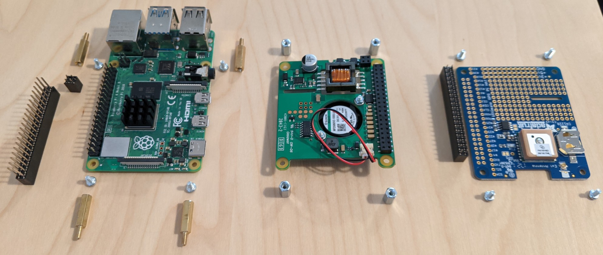
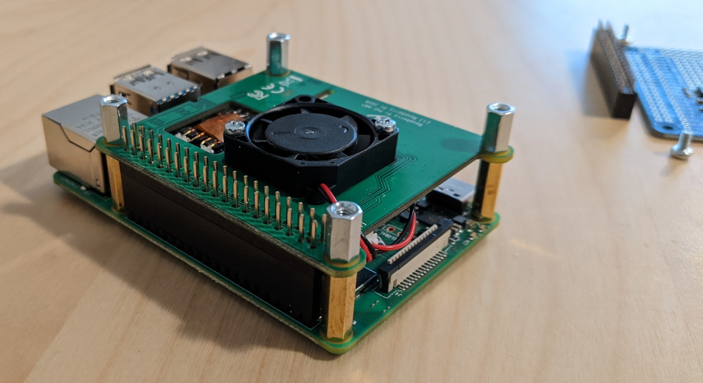

NTP using Raspberry Pi 4 with GPS
Hardware
Parts
- Raspberry Pi 4. Any Raspberry Pi Model B will work. The Pi 4 moved the Ethernet to PCIe from USB so that will be less jitter for LAN traffic.
- PoE HAT
- Ultimate GPS HAT for Raspberry Pi
- 4x 15+5 mm M2.5 brass standoffs. I bought a large package of multiple sizes on Amazon. You need a 15 mm tall standoff for the stacking header below.
- GPIO Stacking Header. This is the “Extra-long 2x20” version with 10 mm pins.
- GPIO Female Socket Riser Header. With the GPIO pins higher up, the PoE pins also need a header to reach the PoE HAT.
- SMA to uFL RF Adapter Cable
- GPS Antenna
I also got a heatsink for the Raspberry Pi so the fan on the PoE HAT would not need to run as much. Once everything was assembled, there was about 2 mm of clearance between the fan and the GPS HAT.
I ordered almost everything from Adafruit because they are close by so shipping is fast.
Assembly
The Ultimate GPS HAT required soldering the included header. I have seen other GPS HATs that do not require soldering if that is a problem. I opted for this one because I had the tools, this is what Adafruit had, and rather wanted to try soldering.
Here is a component overview with everything that went into the build. The heatsink has already been applied. 
Connect the stacking and 2x2 headers then attach the PoE HAT to them with the 15 mm standoffs to verify the PoE HAT works. The pins on the stacking header will go through the PoE HAT. 
Use the standoffs included with the PoE HAT on top of the HAT and attach the GPS HAT on top of PoE and use the PoE HAT’s screws to secure everything together.
The PoE HAT was a bit finicky to use. The first time I connected the PoE HAT, everything was fine. I then disconnected everything for pictures, reconnected everything, soldered the header to the GPS HAT, and then the PoE HAT didn’t power on the Pi. I disconnected everything yet again, connected only the PoE HAT, and it worked again. I connected the GPS HAT a second time and it still worked so I don’t know what happened before.
Software
All of the steps assume Raspbian 10 (Buster). Adjust the packages to install to your distro of choice if you are not using Raspbian. The configuration of the software should remain very similar.
Install everything needed now at once. I opted for chrony but NTP works well and needs only small translations of the chrony options. Contrary to all other documentation I have seen on this, you do not need to compile anything from scratch.
$ sudo apt install chrony gpsd gpsd-clients pps-tools
Serial Port
The serial port is used to receive the NMEA 0183 data from the GPS device. Logging in from the serial port must be disabled but the serial hardware kept enabled for communication.
Run sudo raspi-config, choose “Interface Options”.
$ sudo raspi-config
┌─────────┤ Raspberry Pi Software Configuration Tool (raspi-config) ├──────────┐
│ │
│ 1 System Options Configure system settings │
│ 2 Display Options Configure display settings │
│ 3 Interface Options Configure connections to peripherals │
│ 4 Performance Options Configure performance settings │
│ 5 Localisation Options Configure language and regional settings │
│ 6 Advanced Options Configure advanced settings │
│ 8 Update Update this tool to the latest version │
│ 9 About raspi-config Information about this configuration tool │
│ │
│ │
│ │
│ │
│ │
│ <Select> <Finish> │
│ │
└──────────────────────────────────────────────────────────────────────────────┘
Then choose “Serial Port”.
┌─────────┤ Raspberry Pi Software Configuration Tool (raspi-config) ├──────────┐
│ │
│ P1 Camera Enable/disable connection to the Raspberry Pi Camera │
│ P2 SSH Enable/disable remote command line access using SSH │
│ P3 VNC Enable/disable graphical remote access using RealVNC │
│ P4 SPI Enable/disable automatic loading of SPI kernel module │
│ P5 I2C Enable/disable automatic loading of I2C kernel module │
│ P6 Serial Port Enable/disable shell messages on the serial connection │
│ P7 1-Wire Enable/disable one-wire interface │
│ P8 Remote GPIO Enable/disable remote access to GPIO pins │
│ │
│ │
│ │
│ │
│ │
│ <Select> <Back> │
│ │
└──────────────────────────────────────────────────────────────────────────────┘
Select “No” to disable the login shell over serial port and then “Yes” to keep the serial port hardware enabled. Press Tab to select “Finish”. The utility will prompt you to reboot so do that.
Once the Pi comes back up, it is time to test the GPS HAT.
Set the mode for /dev/serial0 to raw, 9600 baud, 8 bits, no modem control signals, and one stop bit.
See the stty(1) man page for more information on everything.
$ sudo stty -F /dev/serial0 raw 9600 cs8 clocal -cstopb
Now check /dev/serial0 to verify NMEA data appears.
$ cat /dev/serial0
0.15,81.69,210821,,,A*56
$GNVTG,81.69,T,,M,0.15,N,0.28,K,A*1B
$GNGGA,154540.000,4XXX.XXXX,N,07XXX.XXXX,W,1,11,0.92,1XX.X,M,-34.2,M,,*4E
$GPGSA,A,3,02,05,20,06,19,09,,,,,,,1.25,0.92,0.84*01
$GLGSA,A,3,65,87,88,71,72,,,,,,,,1.25,0.92,0.84*10
$GNRMC,154540.000,A,4XXX.XXXX,N,07XXX.XXXX,W,0.57,81.69,210821,,,A*57
There should be output regardless if there is a fix or not. Once there is a fix, more of the GPS data will be filled in with much less “mostly comma” output. This HAT has a LED that will blink every second when it is searching and slow to blinking every 15 seconds when it has a fix.
I was able to get a fix within a few minutes while indoors, 20 feet from a window, and without attaching the external antenna.
One Pulse Per Second (1PPS)
Use the pps-tools package to monitor the 1 Pulse Per Second GPS sends to get exactly when each GPS second begins.
Edit /boot/config.txt to enable kernel support for PPS.
/boot/overlays/README documents the available overlays and pps-gpio is listed in there.
The Adafruit GPS HAT uses GPIO pin 4 so add that to config.txt.
dtoverlay=pps-gpio,gpiopin=4
Reboot to use the overlay.
When the Pi boots up, test the signal is received with ppstest.
$ sudo ppstest /dev/pps0
trying PPS source "/dev/pps0"
found PPS source "/dev/pps0"
ok, found 1 source(s), now start fetching data...
source 0 - assert 1629489053.004789031, sequence: 98 - clear 0.000000000, sequence: 0
source 0 - assert 1629489054.004796073, sequence: 99 - clear 0.000000000, sequence: 0
source 0 - assert 1629489055.004806575, sequence: 100 - clear 0.000000000, sequence: 0
GPSD
The gpsd package includes a systemd socket unit file, gpsd.socket, for systemd to automatically start GPSD when something connects to the default GPSD port of 2947.
This is useful for regular GPS use but can be frustrating when debugging.
My advice is to stop (sudo systemctl stop gpsd.socket) and disable (sudo systemctl disable gpsd.socket) the unit file if you need to debug GPSD.
Leaving gpsd.socket disabled will be fine for timekeeping because gpsd.service will be used instead.
Edit /etc/default/gpsd to set DEVICES to use the serial port to receive GPS NMEA data and the pps0 device to receive the kernel’s PPS.
Also set GPSD_OPTIONS to tell GPSD to immediately talk to the device and not wait for a client to connect.
DEVICES="/dev/serial0 /dev/pps0"
GPSD_OPTIONS="-n"
Restart GPSD to use those devices and enable it to start automatically at boot.
$ sudo systemctl restart gpsd.service
$ sudo systemctl enable gpsd.service
Run gpsmon or cgps -s to connect to GPSD and display the GPS information.
Check for PPS data and PPS lines to appear in the packet log.
Note, if the terminal is 24 lines tall, you will only see a
single line of the packet log and it will be difficult to spot the PPS
line.
$ gpsmon
tcp://localhost:2947 NMEA0183>
┌──────────────────────────────────────────────────────────────────────────────┐
│Time: 2021-08-22T21:53:45.000Z Lat: XX XX' XX.XXXX0" Non: XX XX' XX.XXXX0" W│
└───────────────────────────────── Cooked TPV ─────────────────────────────────┘
┌──────────────────────────────────────────────────────────────────────────────┐
│ GPGST GNGGA GPGSA GLGSA GNRMC GNZDA GPGRS GPGSV GLGSV │
└───────────────────────────────── Sentences ──────────────────────────────────┘
┌──────────────────┐┌────────────────────────────┐┌────────────────────────────┐
│Ch PRN Az El S/N ││Time: 215345.000 ││Time: 215345.000 │
│ 0 XX XX XX 41 ││Latitude: 4XXX.XXXX N ││Latitude: 4XXX.XXXX │
│ 1 XX XX XX 37 ││Longitude: 07XXX.XXXX W ││Longitude: 07XXX.XXXX │
│ 2 XX XXX XX 28 ││Speed: 0.26 ││Altitude: 1XX.X │
│ 3 XX XXX XX 36 ││Course: 94.750 ││Quality: 1 Sats: 08 │
│ 4 XX XXX XX 27 ││Status: A FAA: A ││HDOP: 1.17 │
│ 5 XX XX XX 21 ││MagVar: ││Geoid: -34.2 │
│ 6 XX XXX XX 0 │└─────────── RMC ────────────┘└─────────── GGA ────────────┘
│ 7 XX XXX XX 0 │┌────────────────────────────┐┌────────────────────────────┐
│ 8 XX XXX XX 0 ││Mode: A3 Sats: 23 24 10 18 ││UTC: 215345.000RMS: 7.3 │
│ 9 XXX XX XX 0 ││DOP: H=1.17 V=0.91 P=1.48 ││MAJ: 4.5 MIN: 4.0 │
│10 XX XX XX 40 ││TOFF: 0.319084138 ││ORI: 164.5 LAT: 4.4 │
│11 XX 1XX XX 37 ││PPS: 0.000759500 ││LON: 4.1 ALT: 24 │
└────── GSV ───────┘└──────── GSA + PPS ─────────┘└─────────── GST ────────────┘
(72) $GPGRS,215344.000,1,-5.93,-0.14,0.83,36.9,3.35,9.75,-0.36,-2.94,,,,*72
(51) $GPGST,215344.000,7.4,4.4,3.9,150.3,4.3,4.0,23*40
------------------- PPS offset: 0.000759500 ------
(75) $GNGGA,215345.000,4XXX.XXXX,N,07XXX.XXXX,W,1,08,1.17,1XX.X,M,-34.2,M,,*4E
(52) $GPGSA,A,3,23,18,24,15,10,,,,,,,,1.48,1.17,0.91*0B
(48) $GLGSA,A,3,69,78,68,,,,,,,,,,1.48,1.17,0.91*12
(71) $GNRMC,215345.000,A,4XXX.XXXX,N,07XXX.XXXX,W,0.26,94.75,220821,,,A*5E
(35) $GNZDA,215345.000,22,08,2021,,*45
(71) $GPGRS,215345.000,1,-5.51,0.95,0.27,37.1,2.82,10.6,-2.84,-3.96,,,,*57
(51) $GPGST,215345.000,7.3,4.5,4.0,164.5,4.4,4.1,24*49
------------------- PPS offset: 0.000758989 ------
Note the “PPS offset” lines and the PPS time offset in the display. That means GPSD is receiving everything and can send the data to the desired timekeeping daemon.
Timekeeping
Before configuring chrony, run ntpshmmon as root to find the shared memory (SHM) sources that GPSD is already populating.
Despite its name starting with “ntp”, ntpshmmon is part of the gpsd package.
$ sudo ntpshmmon
ntpshmmon version 1
# Name Seen@ Clock Real L Prec
sample NTP0 1629680609.372849180 1629680608.363601521 1629680608.000000000 0 -20
sample NTP2 1629680609.373066773 1629680609.041970056 1629680609.000000000 0 -30
sample NTP0 1629680609.385268612 1629680609.384725334 1629680609.000000000 0 -20
sample NTP2 1629680610.042570932 1629680610.041973357 1629680610.000000000 0 -30
The precision (Prec) field is the precision of the clock scaled with log(2).
The lower the value in the precision column, the more accurate that clock is.
Usually the NMEA clock is at NTP0 and 1PPS is at NTP1. With this HAT the 1PPS appears at NTP2 (note the more accurate precision of -30 vs -20).
chrony
Edit /etc/chrony/chrony.conf to use the clocks from GPSD.
I kept the pool line to allow chrony to synchronize with hosts over the internet until it can determine the accuracy of the PPS clock.
The precision is because chrony cannot read the precision from the shared memory segments.
The delay is
because the GPS NMEA data is read over a relatively slow serial port and
the larger delay allows greater range for overlap when reading the two
clocks.
I will adjust it later once its offset is known.
refclock SHM 0 refid GPS precision 1e-1 delay 0.1
refclock SHM 2 refid PPS precision 1e-7
Restart chrony.
$ sudo systemctl restart chrony.service
Now wait a while and check periodically to see if chrony picked the PPS clock.
When it does, “PPS” clock will have the prefix be #*.
Any other sources mixed in with the chosen source will have a prefix of “+” while a prefix of “-“ or “x” are excluded sources.
I added the -n argument to make chronyc not try to resolve the IPs to display the output faster.
$ chronyc -n sources
210 Number of sources = 6
MS Name/IP address Stratum Poll Reach LastRx Last sample
===============================================================================
#x GPS 0 4 377 17 +387ms[ +387ms] +/- 150ms
#* PPS 0 4 377 18 -592ns[-1062ns] +/- 851ns
...
After waiting for sample times to settle, I used the offset under the “Last sample” column to set an offset for the GPS NMEA clock in the config to bring it closer to the PPS clock and prevent chrony from classifying it as a “falseticker” (the “x” in “#x”).
Edit /etc/chrony/chrony.conf to set an offset and then restart chrony.service.
refclock SHM 0 refid GPS precision 1e-1 offset 0.370
Note the addition of offset to add a fixed offset to that clock and the removal of delay because the clock is approximately correct with an offset.
Serving Time
If you are not interested in using the Raspberry Pi as a time server then you are done. If you are interested, continue onwards.
chrony
Edit /etc/chrony/chrony.conf to enable other clients to connect to chronyd.
allow 192.168.0.0/24
# If you also have IPv6 on the subnet.
allow 2600:8394:a947:bf::/64
Restart chrony to enable serving time.
$ sudo systemctl restart chrony.service
DHCP
I use pfSense as a router and first set the Raspberry Pi to have a fixed IP address and then added that IP address as an NTP server on the LAN interface. My Fedora laptop automatically picked up the new NTP server but a different Raspberry Pi running Debian and a FreeBSD server did not.
$ chronyc -n sources
MS Name/IP address Stratum Poll Reach LastRx Last sample
===============================================================================
^? ...
^* 192.168.0.4 1 9 377 469 -11us[ -114us] +/- 1260us
That is almost one millisecond accuracy over WiFi. The other Raspberry Pi averages 300 µs accuracy over Ethernet.
Sources
- Adafruit Ultimate GPS HAT for Raspberry Pi Tutorial.
This was useful for setting up the Raspberry Pi’s serial port and checking the serial device. The tutorial used
/dev/ttyAMA0but it’s/dev/ttyS0on Raspberry Pi 3 and newer. - Steve Friedl’s Building a GPS Time Server with the Raspberry Pi 3 I found this helpful as proof that everything would work. He used a Raspberry Pi 3 but the same HAT.
- GPSD Time Service HOWTO This was invaluable for learning how GPSD interacted with chrony and NTP. How to configure the two time keeping daemons was pulled from this site. Additional information on tuning performance is also available.